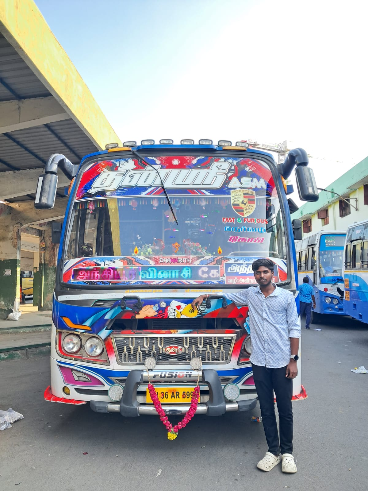

Not an overnight success. A story of childhood dreams, private buses, countless clicks, and three years of refusing to give up.
Discover his journey ↓
For him, buses were never just vehicles. Since childhood, private buses held a special place in his heart—their designs, their journeys, and the stories they carried.
When he reached 12th standard, that passion found a new road. He began sharing it on Instagram as Sarathy Sixwheelers Gallery, turning something he loved into something others could experience too.
“Some people saw just a bus.
He saw a dream worth chasing.”
Behind this number are years of showing up, even on the days when it would have been easier to stop.
A young boy from a small town found joy and wonder in private buses. That fascination became a lasting passion.
During his 12th-standard years, he began his Instagram journey as Sarathy Sixwheelers Gallery, sharing the world he loved.
There were problems, insults, people who dismissed his interests, and difficulties even within his family. Still, he kept posting, learning, and moving forward.
Three years of continuous effort have brought him to this beautiful milestone. Not the finish line—just proof that his dedication is taking him somewhere.
“From a small town to big dreams.
The road ahead is still yours.”
Six thousand followers may look like a number on a screen, but we know it represents so much more: the time you gave, the struggles you faced, the courage to keep loving what you love, and the work you put in when nobody was watching.
Not everyone understood your passion. But you didn't let that decide how far you could go.
Never stop clicking. Never stop dreaming. May the coming years bring you more journeys, more opportunities, more people who appreciate your work, and success beyond anything you imagine today.
Here's to the next milestone—and all the beautiful roads in between. 🚌✨